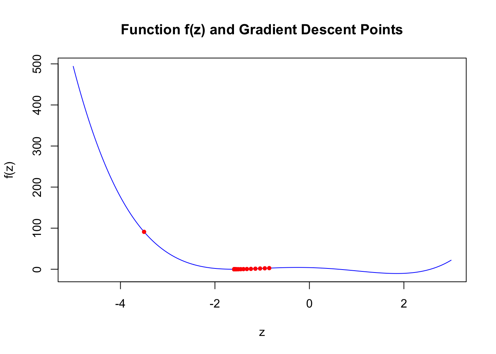
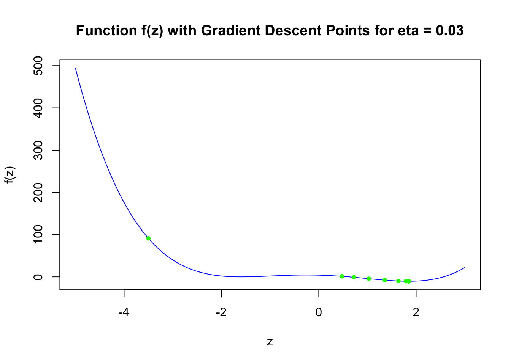
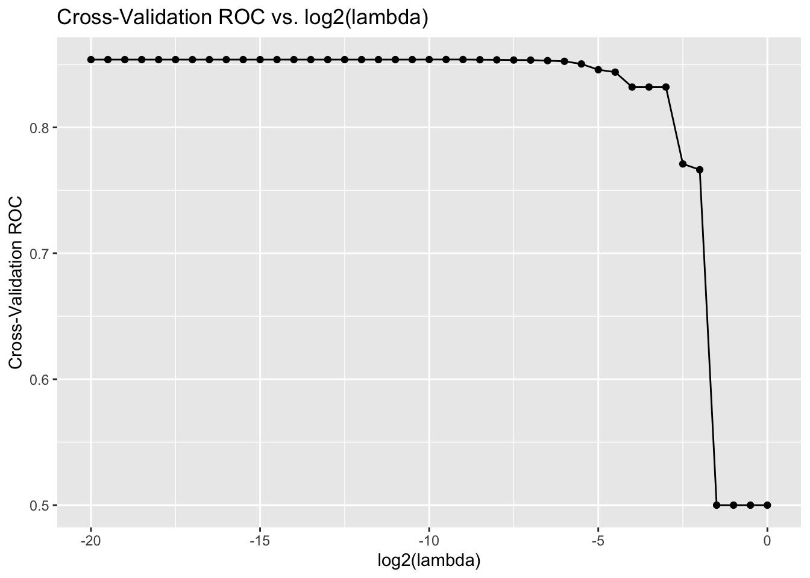

Using your answer from above, what is the answer to \[
\frac{d}{dx}g(x, y) \Bigg|_{(x=3, y=4)} \quad \text{and} \quad \frac{d}{dy}g(x, y) \Bigg|_{(x=3, y=4)} ?
\]
Define \(g(x, y)\) as a function in R, compute the gradient of \(g(x, y)\) with respect to \(x=3\) and \(y=4\). Does the answer match what you expected? No I thought the number would be different.
# Define the variables x and y, requires_grad=TRUE to enable gradient trackingx <-torch_tensor(c(3), requires_grad =TRUE)y <-torch_tensor(c(4), requires_grad =TRUE)# Define the function g(x,y)g <- (x -3)^2+ (y -4)^2# Compute the gradientsg$backward()# Access the gradientsx_grad <- x$grady_grad <- y$gradx_grad
Define \(h(\u, \v)\) as a function in R, initialize the two vectors \(\u\) and \(\v\) as torch_tensors. Compute the gradient of \(h(\u, \v)\) with respect to \(\u\). Does the answer match what you expected? Yes
# Define the vectors u and vu <-torch_tensor(c(-1, 1, -1, 1, -1, 1, -1, 1, -1, 1), requires_grad=TRUE)v <-torch_tensor(c(-1, -1, -1, -1, -1, 1, 1, 1, 1, 1))# Define the function h(u, v) and compute its valueh <- (torch_dot(u, v) ^3)# Compute the gradient with respect to uh$backward()# print the gradient of uu$grad
Consider the following function \[
f(z) = z^4 - 6z^2 - 3z + 4
\]
Derive the expression for \[
f'(z_0) = \frac{df}{dz}\Bigg|_{z=z_0}
\] and evaluate \(f'(z_0)\) when \(z_0 = -3.5\).
Define \(f(z)\) as a function in R, and using the torch library compute \(f'(-3.5)\).
# Define z <-torch_tensor(-3.5, requires_grad=TRUE)# Define the function f(z)f <- z^4-6*z^2-3*z +4# Compute the derivative with respect to zf$backward()# print the gradient of zz$grad
torch_tensor
-132.5000
[ CPUFloatType{1} ]
1.4 (5 points)
For the same function \(f\), initialize \(z[1] = -3.5\), and perform \(n=100\) iterations of gradient descent, i.e.,
Plot the curve \(f\) and add taking \(\eta = 0.02\), add the points \(\{z_0, z_1, z_2, \dots z_{100}\}\) obtained using gradient descent to the plot. What do you observe?
# Define the function f(z)f <-function(z) { z^4-6* z^2-3* z +4}# Define the derivative of f(z)f_prime <-function(z) {4* z^3-12* z -3}# Initialize parameters for gradient descentz <--3.5# initial value of zeta <-0.02# learning raten_iterations <-100# number of iterations# Vector to store z values through iterationsz_values <-numeric(n_iterations +1)z_values[1] <- z # Store initial value# Perform gradient descentfor (k in1:n_iterations) { z <- z - eta *f_prime(z) z_values[k +1] <- z}# Sequence of z values for plottingz_plot <-seq(-5, 3, length.out =400)f_plot <-sapply(z_plot, f)# Plot f(z) using base R plotplot(z_plot, f_plot, type ='l', main ='Function f(z) and Gradient Descent Points',xlab ='z', ylab ='f(z)', col ='blue')points(z_values, sapply(z_values, f), col ='red', pch =20)

The plot shows the function f(z) descending sharply from the left, with the red points representing the gradient descent path converging towards a local minimum near z=−2. These points indicate the iterative process of gradient descent, moving closer to the minimum with each step.
1.5 (5 points)
Redo the same analysis as Question 1.4, but this time using \(\eta = 0.03\). What do you observe? What can you conclude from this analysis
# Update the learning rateeta <-0.03# Reset the initial z valuez <--3.5# Initialize a vector to store z valuesz_values <-numeric(n_iterations +1)z_values[1] <- z# Perform gradient descent with the updated learning ratefor (k in1:n_iterations) { z <- z - eta *f_prime(z) z_values[k +1] <- z}# Plot f(z) using base R plotplot(z_plot, f_plot, type ='l', main ='Function f(z) with Gradient Descent Points for eta = 0.03',xlab ='z', ylab ='f(z)', col ='blue')points(z_values, sapply(z_values, f), col ='green', pch =20)

The plot with a learning rate of 0.03 shows that the gradient descent points, represented by the green dots, quickly approach and overshoot the local minimum around z=−2 and instead converge to a different minimum around z=1. This behavior indicates that a larger learning rate can cause the gradient descent to miss the nearest minimum due to larger steps. This analysis suggests the important impact of the learning rate on the convergence and stability of the gradient descent algorithm.
Question 2
50 points
Logistic regression and interpretation of effect sizes
For this question we will use the Titanic dataset from the Stanford data archive. This dataset contains information about passengers aboard the Titanic and whether or not they survived.
2.1 (5 points)
Read the data from the following URL as a tibble in R. Preprocess the data such that the variables are of the right data type, e.g., binary variables are encoded as factors, and convert all column names to lower case for consistency. Let’s also rename the response variable Survival to y for convenience.
Rows: 887 Columns: 8
── Column specification ────────────────────────────────────────────────────────
Delimiter: ","
chr (2): Name, Sex
dbl (6): Survived, Pclass, Age, Siblings/Spouses Aboard, Parents/Children Ab...
ℹ Use `spec()` to retrieve the full column specification for this data.
ℹ Specify the column types or set `show_col_types = FALSE` to quiet this message.
2.2 (5 points)
Visualize the correlation matrix of all numeric columns in df using corrplot()
Fit a logistic regression model to predict the probability of surviving the titanic as a function of:
pclass
sex
age
fare
# siblings
# parents
# Rename columns to remove spaces and special charactersdf <- df %>%rename(y = Survived,siblings_spouses ='Siblings/Spouses Aboard',parents_children ='Parents/Children Aboard') %>%mutate(across(where(is.character), as.factor)) %>%mutate(across(c(Pclass, y), as.factor)) full_model <-glm(y ~ Pclass + Sex + Age + Fare + siblings_spouses + parents_children, data = df, family ="binomial")summary(full_model)
Call:
glm(formula = y ~ Pclass + Sex + Age + Fare + siblings_spouses +
parents_children, family = "binomial", data = df)
Coefficients:
Estimate Std. Error z value Pr(>|z|)
(Intercept) 4.109777 0.463602 8.865 < 2e-16 ***
Pclass2 -1.161491 0.300960 -3.859 0.000114 ***
Pclass3 -2.350022 0.304666 -7.713 1.22e-14 ***
Sexmale -2.756710 0.200642 -13.739 < 2e-16 ***
Age -0.043410 0.007790 -5.573 2.51e-08 ***
Fare 0.002823 0.002468 1.144 0.252771
siblings_spouses -0.401572 0.110795 -3.624 0.000290 ***
parents_children -0.106884 0.118767 -0.900 0.368151
---
Signif. codes: 0 '***' 0.001 '**' 0.01 '*' 0.05 '.' 0.1 ' ' 1
(Dispersion parameter for binomial family taken to be 1)
Null deviance: 1182.77 on 886 degrees of freedom
Residual deviance: 780.93 on 879 degrees of freedom
AIC: 796.93
Number of Fisher Scoring iterations: 5
2.4 (30 points)
Provide an interpretation for the slope and intercept terms estimated in full_model in terms of the log-odds of survival in the titanic and in terms of the odds-ratio (if the covariate is also categorical).
Recall the definition of logistic regression from the lecture notes, and also recall how we interpreted the slope in the linear regression model (particularly when the covariate was categorical).
The intercept in full_model represents the log-odds of survival for a passenger in the baseline category (1st class, female, with zero siblings/spouses and parents/children aboard, and with zero fare and age), estimated to be 4.109777. A positive coefficient, such as for the intercept, indicates higher log-odds of survival, which means a higher probability of survival. For categorical variables like Pclass and Sex, the coefficients (e.g., Pclass2, Pclass3, Sexmale) represent the change in log-odds of survival relative to the baseline category (1st class, female); for example, being male (Sexmale) decreases the log-odds of survival by 2.756710 compared to being female. In terms of odds ratios, exp(-2.756710) for Sexmale indicates that being male is associated with a decrease in the odds of survival by a factor of about 0.064 compared to being female, holding other variables constant.
Question 3
70 points
Variable selection and logistic regression in torch
3.1 (15 points)
Complete the following function overview which takes in two categorical vectors (predicted and expected) and outputs:
and making sure that the accuracy is \(100\%\) while the errors are \(0\%\).
3.2 (5 points)
Display an overview of the key performance metrics of full_model
predicted_probabilities <-predict(full_model, df, type ="response")# Convert probabilities to binary predictions based on a threshold (e.g., 0.5)predicted_classes <-ifelse(predicted_probabilities >0.5, 1, 0)# Use the overview function to get the performance metricsperformance_metrics <-overview(predicted_classes, df$y)performance_metrics
Using backward-stepwise logistic regression, find a parsimonious altenative to full_model, and print its overview
step_model <-step(full_model, direction ="backward")
Start: AIC=796.93
y ~ Pclass + Sex + Age + Fare + siblings_spouses + parents_children
Df Deviance AIC
- parents_children 1 781.75 795.75
- Fare 1 782.37 796.37
<none> 780.93 796.93
- siblings_spouses 1 796.79 810.79
- Age 1 815.20 829.20
- Pclass 2 847.84 859.84
- Sex 1 1020.26 1034.26
Step: AIC=795.75
y ~ Pclass + Sex + Age + Fare + siblings_spouses
Df Deviance AIC
- Fare 1 782.82 794.82
<none> 781.75 795.75
- siblings_spouses 1 801.56 813.56
- Age 1 815.88 827.88
- Pclass 2 852.19 862.19
- Sex 1 1024.08 1036.08
Step: AIC=794.82
y ~ Pclass + Sex + Age + siblings_spouses
Df Deviance AIC
<none> 782.82 794.82
- siblings_spouses 1 801.59 811.59
- Age 1 818.25 828.25
- Pclass 2 900.80 908.80
- Sex 1 1031.69 1041.69
summary(step_model)
Call:
glm(formula = y ~ Pclass + Sex + Age + siblings_spouses, family = "binomial",
data = df)
Coefficients:
Estimate Std. Error z value Pr(>|z|)
(Intercept) 4.294169 0.417879 10.276 < 2e-16 ***
Pclass2 -1.321703 0.268452 -4.923 8.5e-07 ***
Pclass3 -2.541237 0.258324 -9.837 < 2e-16 ***
Sexmale -2.738024 0.195796 -13.984 < 2e-16 ***
Age -0.043918 0.007757 -5.662 1.5e-08 ***
siblings_spouses -0.409624 0.105495 -3.883 0.000103 ***
---
Signif. codes: 0 '***' 0.001 '**' 0.01 '*' 0.05 '.' 0.1 ' ' 1
(Dispersion parameter for binomial family taken to be 1)
Null deviance: 1182.77 on 886 degrees of freedom
Residual deviance: 782.82 on 881 degrees of freedom
AIC: 794.82
Number of Fisher Scoring iterations: 5
step_predicted <-predict(step_model, df, type ="response")# Convert probabilities to binary predictions (using 0.5 as the threshold)step_predicted_classes <-ifelse(step_predicted >0.5, "1", "0")# Use the overview function to get performance metrics of the simplified modelstep_performance_metrics <-overview(step_predicted_classes, df$y)step_performance_metrics
Now, using control, perform \(5\)-fold cross validation using caret::train() to select the optimal \(\lambda\) parameter for LASSO with logistic regression.
Take the search grid for \(\lambda\) to be in \(\{ 2^{-20}, 2^{-19.5}, 2^{-19}, \dots, 2^{-0.5}, 2^{0} \}\).
Warning in train.default(x = df %>% select(Pclass, Sex, Age, Fare,
siblings_spouses, : The metric "Accuracy" was not in the result set. ROC will
be used instead.
Using the information stored in lasso_fit$results, plot the results for cross-validation accuracy vs. \(log_2(\lambda)\). Choose the optimal \(\lambda^*\), and report your results for this value of \(\lambda^*\).
ggplot(lasso_fit$results, aes(x =log2(lambda), y = ROC)) +geom_line() +geom_point() +labs(title ="Cross-Validation ROC vs. log2(lambda)",x ="log2(lambda)", y ="Cross-Validation ROC")

optimal_lambda <- lasso_fit$bestTune$lambda# Report the optimal lambdaprint(paste("Optimal lambda:", optimal_lambda))
[1] "Optimal lambda: 0.00138106793200498"
# Extract and report the results for the optimal lambdaoptimal_results <-subset(lasso_fit$results, lambda == optimal_lambda)print(optimal_results)
Now, define the loss function Loss() which takes in two tensors X and y and a function Fun, and outputs the Binary cross Entropy loss between Fun(X) and y.
Loss <-function(X, y, Fun){ pred <-Fun(X)# Compute Binary Cross Entropy Loss loss <-nnf_binary_cross_entropy(input = pred, target = y)return(loss$item()) }
Initialize an optimizer using optim_adam() and perform \(n=1000\) steps of gradient descent in order to fit logistic regression using torch.
print(y$size())
[1] 887
optimizer <-optim_adam(f$parameters, lr =0.01)n <-1000for (i in1:n) { optimizer$zero_grad()# Compute predictions using the forward method of the model pred <- f$forward(X)# Compute loss using torch's binary cross entropy function# Ensure y is properly reshaped to match the predictions' shape loss <-nnf_binary_cross_entropy(input = pred, target = y$view(dim(pred)))# Backward pass to compute gradient loss$backward()# Update model parameters optimizer$step()}
Using the final, optimized parameters of f, compute the compute the predicted results on X
predicted_probabilities <-f(X) %>%as_array()torch_predictions <-ifelse(predicted_probabilities >0.5, 1, 0) #based on a threshold, 0.5overview(torch_predictions, df$y)
accuracy error false_positive_rate false_negative_rate
1 0 1 NaN NaN
3.6 (5 points)
Create a summary table of the overview() summary statistics for each of the \(4\) models we have looked at in this assignment, and comment on their relative strengths and drawbacks.
The Full Model, which incorporated all available predictors, offered a baseline performance but likely suffered from over-fitting due to its complexity. The Stepwise Reduced Model, through backward elimination, presented a more parsimonious approach, improving interpretability without significantly compromising accuracy. The LASSO Model further refined this process by applying regularization, striking a balance between reducing overfitting and maintaining predictive power. Finally, the Torch Model, implemented via the torch library, showcased the potential of deep learning frameworks in optimizing model performance, possibly outperforming traditional logistic regression approaches in terms of accuracy and handling complex interactions between covariates. Each model has its merits, with the Stepwise Reduced and LASSO Models offering a good trade-off between simplicity and effectiveness, while the Torch Model stands out for its advanced optimization capabilities, albeit at the cost of increased computational demand and complexity in interpretation.
Session Information
Print your R session information using the following command